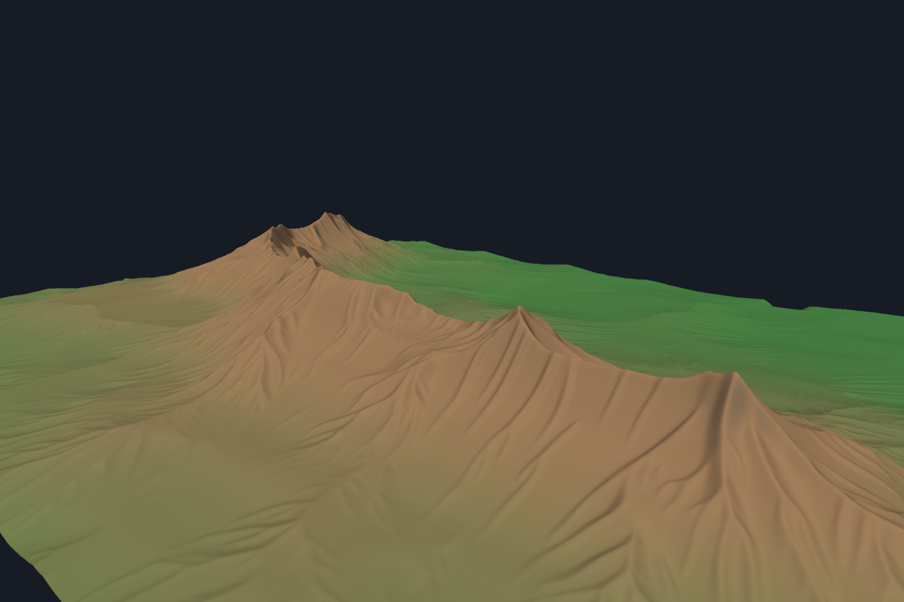
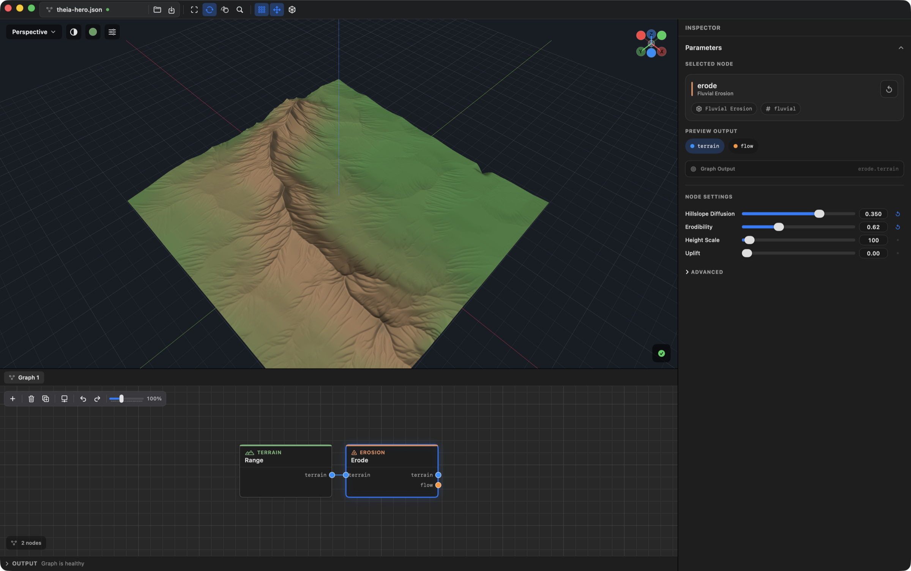
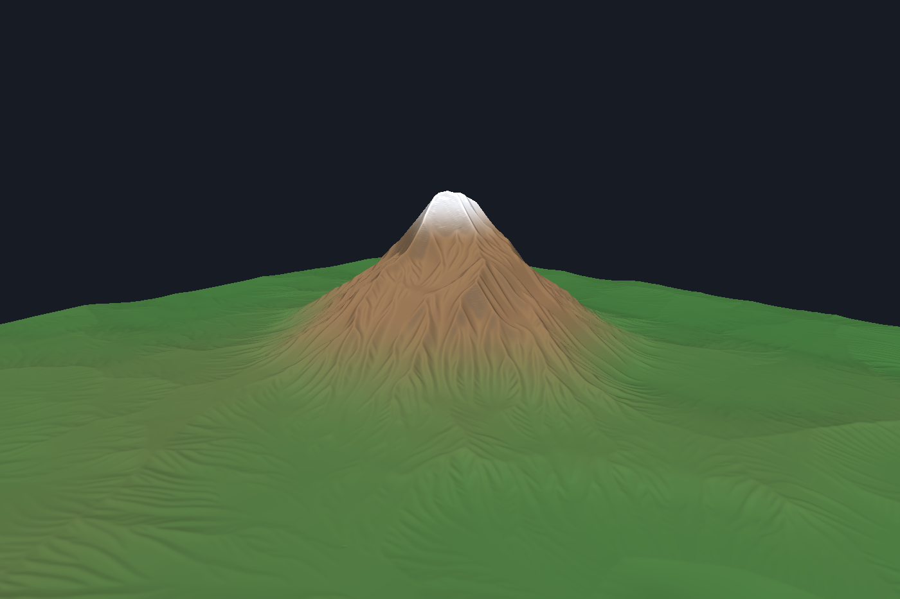
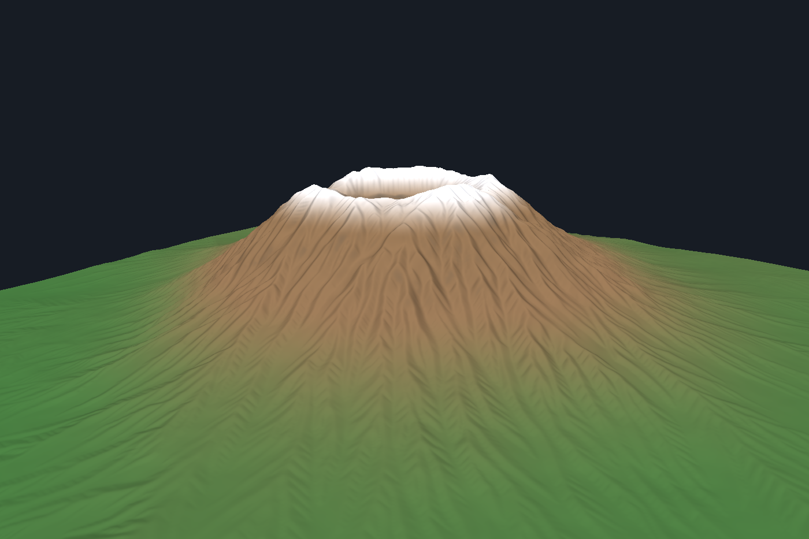
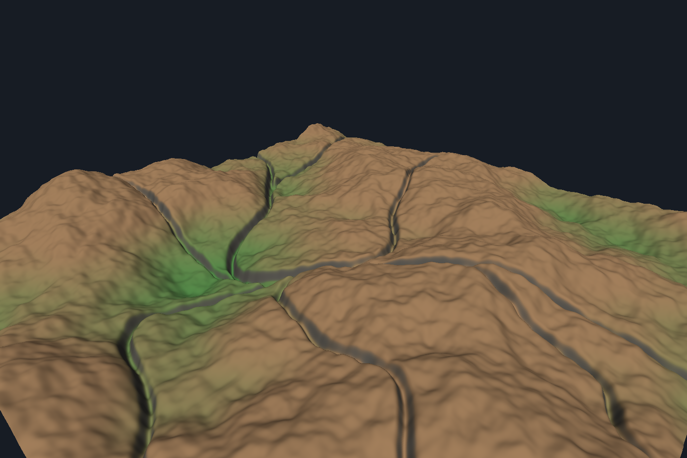
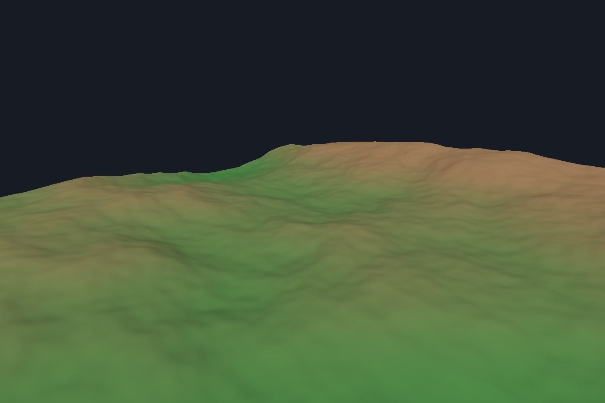

Fluvial incision
Channels cut in proportion to upstream drainage area and slope, which is what makes valley networks branch instead of appearing everywhere at once.
E = K·Am·Sn — stream power incision

Theia is a native terrain studio for macOS. Turn procedural ideas into landscapes through a visual node graph — generate mountains, carve rivers, erode slopes, and export the result for your engine.
The editor
A 3D viewport above, the node graph below, and every parameter of the selected node to the right. Drag a slider and the landscape re-renders while you watch.

Combine terrain primitives, filters, erosion, rivers, masks and transforms without locking your terrain into a single recipe.
Hydraulic, thermal, droplet and fluvial erosion produce landforms with believable drainage structure rather than layered noise.
Preview terrain, masks, analysis data, normals, slopes and shaded surfaces directly in the viewport.
Write 16-bit heightmaps, RAW terrain data, PFM fields and OBJ meshes ready to drop into an engine.
Built for Apple Silicon and powered by Metal, so terrain creation stays fast, interactive and entirely on your Mac.
Every node keeps its parameters live. Change the mountain and the erosion, rivers and masks downstream follow.
Gallery
Rendered straight from the app with the graphs included in this repository — no retouching, no external renderer.




Erosion
Theia's erosion isn't a look-alike filter. Each solver is derived from the geomorphology literature and kept in a research note beside the code, so what the parameters mean is written down.
Channels cut in proportion to upstream drainage area and slope, which is what makes valley networks branch instead of appearing everywhere at once.
Slopes round off and steepen toward a critical angle rather than smoothing uniformly, which keeps ridges sharp and valley walls plausible.
Water is distributed across every downhill neighbour and depressions are filled before routing, so flow reaches an outlet instead of stalling in pits.
Slope, talus and channel widths are measured in world units, so a terrain previewed at 1024 exports at 4096 as the same landscape — not a thinner, sharper one.
Get started
Theia needs macOS 14 or newer, Apple Silicon and the Swift 6 toolchain. Command Line Tools are enough — full Xcode is not required.
Theia is currently in alpha. The editor and core workflow are usable, but project files and features may still change.
# clone and build git clone https://github.com/wondrkid00/Project-Theia.git cd Project-Theia swift build -c release # open the editor swift run theia-viewer examples/fluvial.json # or render from the command line swift run theia-cli export examples/fluvial.json \ --size 2048 --heightmap png16 --mesh obj
Free and open source. Clone it, build it, and make something.